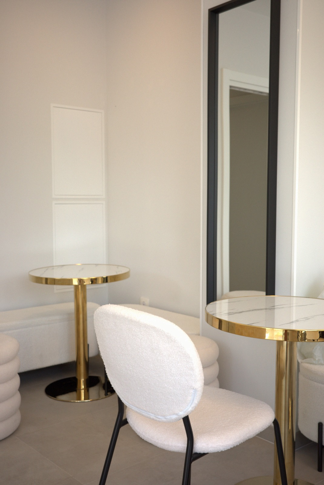
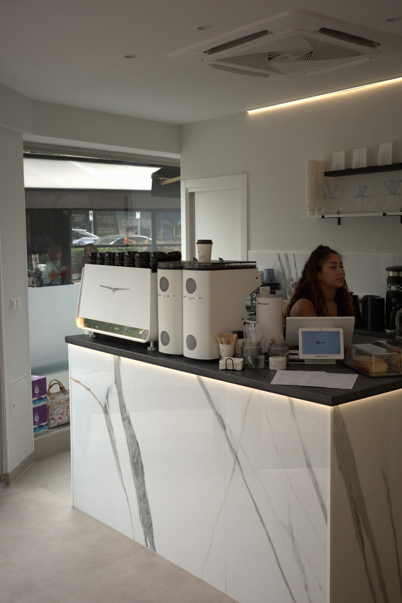

coco latte
una cafetería de barrio para café de especialidad, comida fresca, días que empiezan a solas, se vuelven encuentro, se desvían, y de algún modo terminan contigo todavía aquí.
una cafetería de barrio para café de especialidad, comida fresca, días que empiezan a solas, se vuelven encuentro, se desvían, y de algún modo terminan contigo todavía aquí.
café cuando lo necesitas, comida cuando tienes hambre, algo dulce porque obviamente, y un sitio agradable donde estar mientras el día se aclara.
café de especialidad, molienda fresca, tueste cuidado, origen con criterio, quien es del café lo entiende. los demás se toman un café buenísimo.

cambian las cartas, llegan cosas nuevas, pasan planes, algunas cosas desaparecen rápido — aquí dejamos constancia de lo que está pasando ahora mismo en coco latte.
explorar el tablón

comparte si te portas bien
cafés fríos clásicos
2 por 10 €